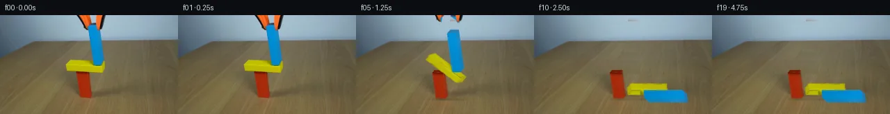

![首帧]()

Round 00
2026-11-05T19:23:24.534519+00:00像素候选变化代码 +310/−0inspection 更新
pixels d93b848bc1722ba1 · code 6579ab56d25840a6
查看本轮 generate.py 真实 diff
--- previous/generate.py
+++ current/generate.py
@@ -0,0 +1,310 @@
+"""Source-pixel continuation using local matting, affine warps and planar contacts.
+No image-view tool, learned model, external renderer or physics engine is used.
+"""
+from pathlib import Path
+import json
+import numpy as np
+from PIL import Image, ImageDraw, ImageFont
+from scipy import ndimage as ndi
+from artifact_io import save
+
+ROOT = Path(__file__).resolve().parent
+SRC = np.asarray(Image.open(ROOT/'first_frame.png').convert('RGB'))
+H,W = SRC.shape[:2]
+YY,XX = np.mgrid[:H,:W]
+SHEAR = .13
+PROJ = np.array([[1.,SHEAR],[0.,1.]])
+IPROJ = np.linalg.inv(PROJ)
+OFFSET = np.array([-SHEAR*120,0.])
+
+def polygon_mask(points, supersample=4):
+ canvas=Image.new('L',(W*supersample,H*supersample))
+ ImageDraw.Draw(canvas).polygon([(round(x*supersample),round(y*supersample)) for x,y in points],fill=255)
+ return np.asarray(canvas.resize((W,H),Image.Resampling.LANCZOS),float)/255
+
+def rot(a):
+ return np.array([[np.cos(a),-np.sin(a)],[np.sin(a),np.cos(a)]])
+
+class Body:
+ def __init__(self,name,p,w,h,a=0):
+ self.name=name; self.p=np.array(p,float);self.initial_p=self.p.copy()
+ self.w=w;self.h=h;self.a=a;self.initial_a=a
+ self.v=np.zeros(2);self.omega=0.
+ self.mass=w*h/500;self.inv=1/self.mass
+ self.I=self.mass*(w*w+h*h)/12;self.invI=1/self.I
+ self.local=np.array([[-w/2,-h/2],[w/2,-h/2],[w/2,h/2],[-w/2,h/2]])
+ def corners(self):return self.local@rot(self.a).T+self.p
+ def screen(self):return self.corners()@PROJ.T+OFFSET
+ def impulse(self,j,at):
+ self.v+=j*self.inv
+ self.omega+=float(np.cross(at-self.p,j))*self.invI
+
+bodies=[Body('red',(122.0,101.5),15,37),Body('yellow',(126.3,77.55),52,10,.035),Body('blue',(145.15,44.35),12,55.9)]
+
+# Full hidden painted faces are completed from measured local material colors.
+# Most visible face pixels are source RGB, including its nonuniform grain.
+extrusions={'red':np.array([3.,-4.]),'yellow':np.array([5.,-6.8]),'blue':np.array([5.,-5.5])}
+colors={'red':((164,41,10),(147,56,22),(118,26,4)),
+ 'yellow':((190,185,3),(176,173,1),(191,193,2)),
+ 'blue':((0,139,210),(22,135,198),(34,123,180))}
+
+# Compute the original silhouettes and a narrowly bounded background repair.
+base_masks={}
+for body in bodies:
+ q=body.screen();e=extrusions[body.name]
+ points=[q[0],q[0]+e,q[1]+e,q[2]+e,q[2],q[3]]
+ base_masks[body.name]=polygon_mask(points)
+left_tool_points=[(109.5,-1),(129.5,-1),(132,11.5),(129,15),(127.4,22.8),(123.8,22),(120.5,18.8),(119,13),(114,6)]
+right_tool_points=[(137,-1),(152,-1),(150,7),(149,13),(147,19),(144.5,22.9),(140.5,23),(138.5,19),(137.5,13)]
+# Center dark gripping pad is attached to the right jaw.
+right_tool_points=[(137,-1),(152,-1),(150,7),(149,13),(147,19),(144.5,22.9),(140.5,23),(138.5,19),(131,14),(131,11),(137,11)]
+tool_masks=[polygon_mask(left_tool_points),polygon_mask(right_tool_points)]
+combined=np.maximum.reduce(list(base_masks.values())+tool_masks)
+repair=ndi.binary_dilation(combined>.06,iterations=1)
+# Original contact shadows, including the red block's soft foot shadow.
+repair |= ((XX>88)&(XX<153)&(YY>=79)&(YY<=85))
+repair |= ((XX>108)&(XX<141)&(YY>=116)&(YY<=124))
+BG=SRC.astype(float).copy()
+for y in range(H):
+ xs=np.flatnonzero(repair[y])
+ if len(xs)==0:continue
+ # Independent contiguous row spans, interpolated from original nearby RGB.
+ cuts=np.r_[0,np.flatnonzero(np.diff(xs)>1)+1,len(xs)]
+ for lo,hi in zip(cuts[:-1],cuts[1:]):
+ x0=int(xs[lo]);x1=int(xs[hi-1]);l=max(0,x0-3);r=min(W-1,x1+3)
+ lc=SRC[y,max(0,l-2):l+1].mean(0);rc=SRC[y,r:min(W,r+3)].mean(0)
+ u=(np.arange(x0,x1+1)-l)/(r-l)
+ fill=lc[None]*(1-u[:,None])+rc[None]*u[:,None]
+ if y>40:
+ # Fine tabletop texture is copied from unobstructed same-row pixels.
+ ref=SRC[y,172:240].astype(float)
+ detail=ref-ndi.gaussian_filter1d(ref,2,axis=0)
+ fill+=detail[np.arange(x1-x0+1)%len(ref)]*.65
+ BG[y,x0:x1+1]=fill
+BG=np.clip(BG,0,255)
+
+sprites={}
+for body in bodies:
… diff truncated; 223 more lines …